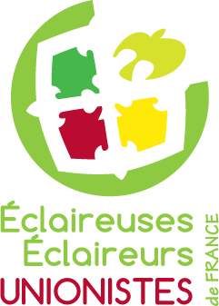

Juillet - août 2017 Servier Monde - Stagiaire à la direction de la transformation
Création et gestion d'un outil de mise en commun de la veille entre les differents services de l'entreprise, sur le réseau social de l'entreprise (Jive)
Juillet - août 2016 Sairon Ware - Stagiaire programation informatique
Dévellopement d'un outil de gestion des occupants pour HLM sur WinDev.
Expérience bénévole
Septembre 2016 - ... EEUDF - Responsable de l'unité de Boucle de la Marne
Encadrant bénévole de jeunes enfants dans le cadre d'activité scout et gestion d'une équipe de responsable et d'une comptabilité. 
Août 2015 Stéa - Bénévole humanitaire
Bénévola dans l'association Stéa de Cluj en Roumanie / Soutien logistique à l'association / Aide scolaire à de jeune Romms
Compétences
Languages de Programmation
Année(s) d'expérience
Python
3
C++
2
W
2
PHP
1
VHDL
1
Unix
1
Autres
Année(s) d'expérience
Solid Works
3
LTSpice
2
Jive
1
Languagues
Niveau
Français
Langue natale
Anglais
C2
Allemand
B1
Centres d'intérêt
Scoutisme : Développe des compétences de leader lors de l'encardement d'une équipe de responsable et de gestion.
Judo : Ceinture marron - Forge une forte volonté face aux difficultés ainsi qu'un esprit de compétition tout en transmettant des valeur tel que le respect et l'humilité.
Voile : Niveau voile bleu - Développe une forte autonomie et une prisse de décision efficace.
Modelage : M'a permis de développer ma créativité dans un activité manuelle.